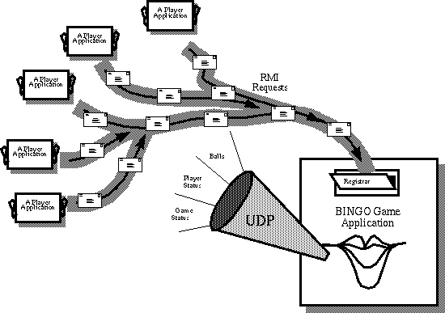

Feedback Form
|
|
Start of Tutorial > Start of Trail > Start of Lesson |
Search
Feedback Form |
At the heart of BINGO is the communication between the Game application and the Player applications.
This figure has been reduced to fit on the page.
Click the image to view it at its natural size.As you can see from the diagram, the Game and the Players have two different forms of communication and use two different mechanisms for them. First, the Game broadcasts status information to all the Players over UDP. Second, the Player makes individual requests of the Game via RMI.
Both of these communication channels work over the Internet. So the BINGO Game application can be running anywhere on the Internet, and so can each of the Player applications.
- The Game broadcasts information to all the Players simultaneously by sending
DatagramPackets over UDP. The information broadcast by the Game includes BINGO balls, game status, and player status. Players get the information by listening to aMulticastSocket.Broadcasting Game Information talks about why UDP is an appropriate choice for broadcasting information and provides you with a description of the code that implements both the Game and Player sides of this form of communication.
- The Player makes three different requests of the game: to register for the next game, to find out the current game status, and to yell "BINGO". The Player makes these requests directly of the Game by invoking methods on the "Registrar"--a remote object in the Game. Invoking methods on an object in another VM is called Remote Method Invocation (RMI).
Handling Player Requests describes why we chose RMI to implement this function and the code that does it.
|
|
Start of Tutorial > Start of Trail > Start of Lesson |
Search
Feedback Form |